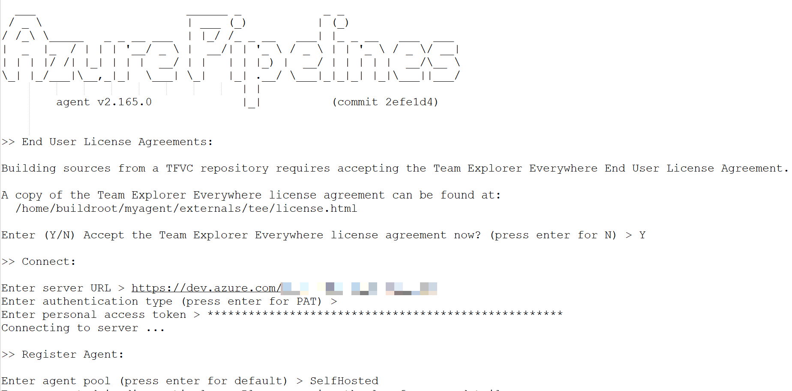

Azure DevOps - Self-Hosted Build Agents
Self-Hosted Agents¶
About Build Agents
This new Learning Module has some very good explanations:
A build agent is a system that performs build tasks. Think of it as a dedicated server that runs your build process.
Imagine that you have an Azure Pipelines project that receives build requests many times per day. Or perhaps you have multiple projects that can each use the same type of build agent. You can organize build agents into agent pools to help ensure that there's a server ready to process each build request.
When a build is triggered, Azure Pipelines selects an available build agent from the pool. If all agents are busy, the process waits for one to become available.
from https://docs.microsoft.com/en-us/learn/modules/host-build-agent/
When my colleagues needed a build agent that could communicate with Azure Resources (such as Storage Accounts) inside of a private Virtual Network then the only way to do this without whitelisting a very large set of public IP address ranges (i.e. Azure Datacenter addresses) was to have a Virtual Machine running inside the same private network to which Azure DevOps would schedule build jobs.
Azure DevOps provides a way for you to run your own Build Agents called Self-hosted Agents.
Configuring an agent on Ubuntu Server¶
When I learned that the requirement was to build Python wheels to be deployed. I guessed that a Linux Virtual Machine should suffice and be a bit less costly to run that a Windows Server Virtual Machine. I elected to deploy a Ubuntu Server.
When I looked into this I found a few blog posts in addition to the official documentation, but all the articles specified using a desktop browser to download the Agent configuration script, and this seemed very odd for Linux where I'd assumed the default mode would be to do everything at the command line so I thought I'd post here how I acheived all of this with just an SSH terminal.
Step 0. Pre-requisites¶
Update the apt package manager cache
sudo apt-get update
Step 1. Create an account under which to run the Agent¶
sudo adduser agentsvc
sudo usermod -aG sudo agentsvc
# test it
su - agentsvc
sudo ls -la /root
Step 2. Install Git2¶
sudo add-apt-repository ppa:git-core/ppa
sudo apt-get update
sudo apt-get install git
Step 3. Install and configure the Agent¶
mkdir -p $HOME/Downloads && cd $HOME/Downloads
curl -o $HOME/Downloads/vsts-agent-linux-x64-2.165.0.tar.gz https://vstsagentpackage.azureedge.net/agent/2.165.0/vsts-agent-linux-x64-2.165.0.tar.gz
cd $HOME
mkdir -p $HOME/myagent/ && cd $HOME/myagent/
tar zxvf $HOME/Downloads/vsts-agent-linux-x64-2.165.0.tar.gz
rm -rf $HOME/Downloads
cd $HOME/myagent
sudo ./bin/installdependencies.sh
./config.sh
You'll see something like this and you are prompted to enter the Azure Devops Organsation ULR and a PAT token:

Tip
There's an even more slick way to do the above steps here: https://github.com/MicrosoftDocs/mslearn-azure-pipelines-build-agent/blob/master/build-agent.sh
Step 4. Run as a Service¶
Now we usually want to run the agent as a service (i.e. have it run continuously waiting for job to be scheduled) so we need to do the following, as documented here.
sudo $HOME/myagent/svc.sh install
sudo $HOME/myagent/svc.sh start
Installing Capabilities¶
Python Tools¶
The following is the sterling work of my colleague https://twitter.com/chyuibacca.
The aim was to install the required Python tools onto the agent so that we could run a Pipeline that includes the following Tasks:
As well as a number of script tasks that use the Azure Machine Learning SDK for Python - also known as azureml-sdk (which gets installed via PyPI from https://pypi.org/project/azureml-defaults/)
1. Create Tool Cache Directory¶
mkdir -p $HOME/myagent/_work/_tool
2. Install Python¶
Install tools required to build Python from source:
sudo apt-get install -y make build-essential libssl-dev zlib1g-dev libbz2-dev libreadline-dev libsqlite3-dev wget curl llvm libncurses5-dev libncursesw5-dev xz-utils tk-dev
Install required Python version (replace x.y.z with the required Python version, e.g. 3.6.7):
wget https://www.python.org/ftp/python/3.6.7/Python-x.y.z.tgz
tar -xzf Python-x.y.z.tgz
cd Python-x.y.z
mkdir -p $HOME/myagent/_work/_tool/Python/x.y.z/x64
./configure --prefix=$HOME/myagent/_work/_tool/Python/x.y.z/x64/ --enable-optimizations --with-ensurepip=install
make -j 8
sudo make altinstall
touch $HOME/myagent/_work/_tool/Python/x.y.z/x64.complete
If required, create major/ major.minor version link to latest Python version:
ln -s $HOME/myagent/_work/_tool/Python/x/x64 $HOME/myagent/_work/_tool/Python/x.y.z/x64
ln -s $HOME/myagent/_work/_tool/Python/x.y/x64 $HOME/myagent/_work/_tool/Python/x.y.z/x64
3. Install Conda¶
Install the latest Conda release:
mkdir -p $HOME/myagent/_work/_tool/miniconda
wget https://repo.anaconda.com/miniconda/Miniconda3-latest-Linux-x86_64.sh
bash ./Miniconda3-latest-Linux-x86_64.sh
/home/agentsvc/myagent/_work/_tool/minconda
Initialise Conda:
eval "$(/home/agentsvc/myagent/_work/_tool/miniconda3/bin/conda shell.bash hook)"
conda init bash
conda config --set auto_activate_base false
Make Conda available to the agent by adding /home/agentsvc/myagent/_work/_tool/miniconda3/condabin to the PATH agent environment variable:
vi $HOME/myagent/.path